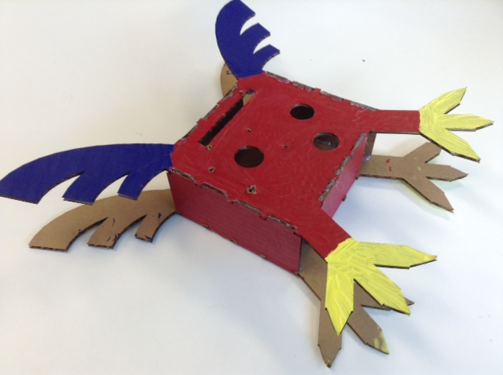

Identifying the Problem
The problem I need to solve is that I need to create a housing that can be used to play my game. This housing will house phidgets that will be used to control the action on screen. It will be made of cardboard, with different pieces cut out using a laser-cutter that will be connected together to create a final housing. The pieces can be connected on their own or using hot glue, and the final housing must be decorated using paint.
Criteria and Constraints
Criteria:
- The housing must be thematic to the game
- The housing must house phidgets to control movement in the game
- The housing must be decorated using paint
- The housing must connect to the game and be usable to play the game
Constraints:
- The housing must be made of carboard pieces that are laser-cut
- All the housing pieces must be cut out of a 600x600mm piece of cardboard
- The housing must be decorated using paint
- The housing must be big enough to accommodate all the necessary phidgets
Research:
Brainstorming:
Prototype vs. Final Housing
- Moved the slider to the top
- Added extra talon to each foot of the housing
- Improved the connection between the connecting walls and the main housing pieces
- Made the housing larger to comfortably accomodate phidgets
Elements and Principles of Design
Elements:
- Lines: A combination of straight, curved, horizontal and vertical lines were used in the design
- Shapes: The design uses squares for the middle of the housing where the phidgets are located Rectangles with smaller rectangular cutouts are used for the walls and feet. Quarter circles are used for the wing design
- Colour: The main body of the housing is comprised of a dark red, with a bright yellow being used for the feet and a dark, vibrant blue present on the wings
Principles:
- Patterns: The walls use a near identical pattern of rectangular cutouts in the walls so as to evenly attach each wall to the main body of the housing
- Proportion: The main body of the housing is significantly larger than the walls that connect the different parts together. This draws attention to the primary face of the phidget and makes it clear to the person using the housing where the front of the housing is
- Harmony: All the different sides of the housing are laser-cut separately, but when assembled together they form a coherent 3-dimensional housing that serves as a controller for the game
Reflection Questions:
What were you drawn to?
I was drawn to the process of modelling a full 3D model for the project. I enjoyed designing all the pieces of the housing to align with my
vision for what I wanted it to look like.
What might you want to learn more about?
I would like to learn about more advanced techniques for modelling a project and making it suitable for laser cutting. I want to learn how to
us more advanced 3D modelling software to create more detailed models in the future.
What was the most enjoyable moment?
The most enjoyable moment to me was taking all the laser-cut pieces of my model and assembling them into my final housing. Seeing the my full housing
completed in my hands brought me great satisfaction in what I had accomplished.
What would you change?
I would have liked to add extra detail to my housing. The additional detail would be used to make it resemble more like a bird, which was the shape I
was attempting to achieve with my original design. I also would have liked to make the housing more ergonomic and comfortable to hold, making it
feel closer to a standard controller.